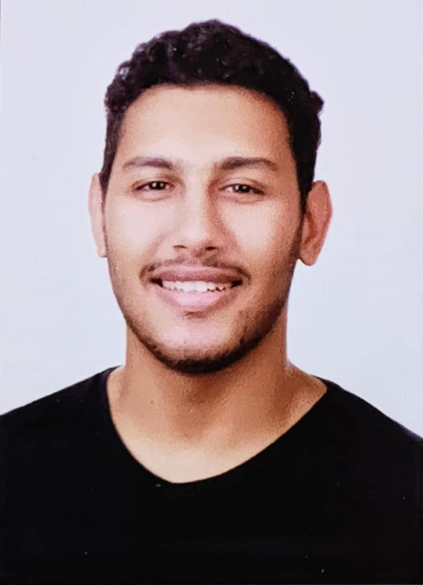

Youssef Ashraf Abd El-Hamid

Summary
Due to my graduation in 2023, I have gained technical experience and skills from the courses as well as
practical skills. Due to my training, I learned a large set of languages and tools to use it in my work.
Education
2019 - 2023
BACHELOR'S DEGREE AT COMPUTER SCIENCE AND AI, AHRAM CANADIAN
UNIVERSITY
I have a 3.2 GPA; my projects used to always get high grades and receive positive feedback and
compliments about my work.
AUGUST 2022 - SEPTEMBER 2022
DEEP LEARNING TRAINING CERTIFICATE, NVIDIA AND ITI
I had a one-month summer training with the ITI at the deep learning department and got a
certificate from Nvidia for completing their deep learning training and passing the test.
EXPERIENCE
MAY 2021 - JUNE 2021
DATA BASE ADMINISTRATOR TRAINEE, AKHBAR EL YOM
I was learning the role of a database administrator and how to solve problems with data entry
and problems with database systems.
JUNE 2022 - PRESENT
SHOOTING COACH, EGYPT SHOOTING SPORT
I teach new people how to use air pistols and air rifles in a professional way and then train them
to improve their aiming, position and shooting skills.
Skills
- Clean coding with easy to track variables so I can work with others easily.
- Excellent time management skills.
- Good communication skills.
- Critical and effective thinking.
- Can work under stress and easily handle pressure.
Activities and Certificates
- A system leaded by a chat-bot that's related to helping college students specially new commers using microsoft power platform
- Deep Learning Training From Nvidia.
- Deep Learning Training From ITI.
- used to be a member of the National Modern Pentathlon Team.
- I claimed gold medal in the youth 19 world cup in USA 2019.
Contact Me
About Me